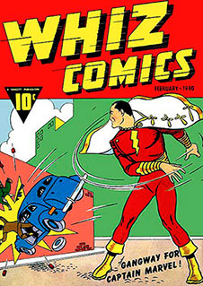

Un super-héros (de l'anglais « super hero » ou « superhero »), au féminin super-héroïne, est un type de personnage de fiction que l'on retrouve principalement dans les comics (bandes dessinées américaines) et dans leurs adaptations audiovisuelles.
Un super-héros est généralement un type de justicier costumé qui se distingue par des capacités hors du commun, lesquelles dérivent le plus souvent de pouvoirs surhumains ou surnaturels (appelés super-pouvoirs), bien que des héros masqués, comme Batman ou Catwoman soient parfois considérés comme des super-héros alors qu'ils n'ont aucun pouvoirs surhumains.
À l'inverse, des personnages ayant des pouvoirs surhumains, comme Mandrake le magicien, sont parfois exclus de la catégorie des super-héros.
Un super-héros porte, dans la grande majorité des cas, un costume spécial pour le distinguer des autres, pour l'aider à mieux combattre et pour dissimuler son identité.
Par son identité et son costume, le super-héros est un sous-genre du « vengeur masqué ». Zorro, malgré son identité secrète et son costume distinctif, n'est pas considéré comme un super-héros, car il combat à l'épée, d'une manière tout à fait normale pour son époque.
La filiation du super-héros avec ce type de justicier masqué est cependant évidente, et fait l'objet d'un hommage explicite dans la mini-série Batman: Dark Knight, publiée par Frank Miller en 1986 : dans cette histoire, le jour tragique du meurtre de ses parents, le jeune Bruce Wayne sortait avec eux d'un cinéma qui projetait un film mettant en scène Zorro.
Source : Wikipedia
